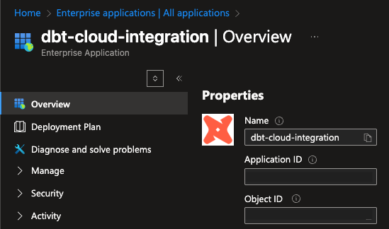

dev vs prod in one config file
profiles.yml is the file that tells dbt where to run. So far yours has had one output — dev — pointing at a local DuckDB file. In production, the same project file declares multiple targets, and you switch between them with --target.
A target is a named output configuration. Each target is a YAML block under outputs: with everything dbt needs to connect to a warehouse:
dbt_project:
target: dev # ← which target to use when --target isn't passed
outputs:
dev:
type: duckdb
path: ../database/dev.duckdb
threads: 4
prod:
type: duckdb
path: ../database/prod.duckdb
threads: 4
The target: key at the top sets the default. Override per command:
dbt build # uses dev (the default)
dbt build --target prod # uses prod
The two builds produce two different warehouses. Same SQL, different destinations.
In DuckDB land, you only really have a different file path. In Snowflake/BigQuery/Redshift, the differences are more meaningful:
| Field | What it controls |
|---|---|
database |
Which warehouse-level container (e.g. ANALYTICS_DEV vs ANALYTICS_PROD). |
schema |
Which schema inside the database. dev usually dbt_<your_username>, prod typically analytics. |
account / host |
Which warehouse instance (rarely differs in practice). |
user / password / keyfile |
Per-target credentials — dev uses your account, prod uses a service account. |
threads |
Parallelism. dev runs 4 threads, prod often runs 16+. |
warehouse (Snowflake-specific) |
Which compute warehouse to use — WH_DEV_XS for dev, WH_PROD_L for prod. |
The YAML mechanic — declare a named target, switch with --target — is identical regardless of which adapter you’re using. That’s what this exercise teaches.
--target interacts with everything elseWhen you run dbt build --target prod:
profiles.yml, finds the prod block, connects.{{ source(...) }} references still point at the same source tables — but now in the prod database/schema.snapshots/).Nothing in your model SQL changes between dev and prod. dbt swaps the connection, not the code. That’s the entire point.
dbt_project.ymlSometimes you want a config to differ per target — e.g. only run snapshots in prod, or use a different schema suffix. dbt supports per-target overrides via vars: in profiles.yml:
outputs:
dev:
type: duckdb
path: ../database/dev.duckdb
schema: dbt_alice # only used by warehouses that need it
prod:
type: duckdb
path: ../database/prod.duckdb
…and reading them in models with {{ var('is_prod', false) }}:
{% if target.name == 'prod' %}
-- prod-only filter
where dbt_valid_from < current_date
{% endif %}
{{ target.name }}, {{ target.schema }}, {{ target.database }} are always available inside Jinja. Use them sparingly — code that branches on target is harder to test.
Even though both targets in this exercise are local DuckDB files (so the differences are cosmetic — just two file paths), the YAML mechanic is exactly what you’d write for a Snowflake or BigQuery setup. The skills transfer:
outputs:--target prodOnce you’ve done it for DuckDB, doing it for Snowflake is just changing type: duckdb to type: snowflake and filling in the credentials.
--target prod rebuilds everything. It doesn’t share state with the dev target — every model gets re-materialized into the prod warehouse from scratch (unless you also use --state).dev schema names in models. A SQL line like from analytics_dev.raw_orders works in dev and breaks in prod. Always reach raw data through {{ source(...) }} so the schema flows from the source YAML, not from hardcoded SQL.profiles.yml if the file is committed. Use environment variables: password: "{{ env_var('DBT_PROD_PASSWORD') }}".1. Open dbt_project/profiles.yml. It currently looks like this:
dbt_project:
target: dev
outputs:
dev:
type: duckdb
path: ../database/dev.duckdb
threads: 4
2. Add a prod: block as a sibling of dev:. Both targets are DuckDB; they differ only in the path:. The final shape:
dbt_project:
target: dev
outputs:
dev:
type: duckdb
path: ../database/dev.duckdb
threads: 4
prod:
type: duckdb
path: ../database/prod.duckdb
threads: 4
Things to watch:
prod: is at the same indent level as dev: (both are children of outputs:).target: dev line at the top doesn’t change. It’s the default target; --target prod overrides it.3. Re-run ingestion against the prod warehouse. The scripts/ingest_raw.py script accepts a target name and routes the raw CSVs to database/<target>.duckdb:
python scripts/ingest_raw.py prod
This is the production reality you’d never bypass: dbt only sees data the ingestion layer landed in the warehouse. For the prod warehouse to have raw tables, ingestion has to run against prod. Same script you ran in Stage 1, different destination.
4. From inside dbt_project/, build the project against the prod target:
cd dbt_project
dbt build --target prod
This re-runs every seed, model, test, and snapshot in the project, but the output lands at database/prod.duckdb instead of database/dev.duckdb. Expect the build to take ~30s (the same as a normal dbt build).
5. Confirm the file landed:
ls ../database/
# should show: dev.duckdb prod.duckdb README.md
6. Press v to verify.
dbt_project/profiles.yml contains the literal string prod: (proves you added the target).database/prod.duckdb exists (proves you ran dbt build --target prod to populate it).| Symptom | Fix |
|---|---|
Credentials in profile "dbt_project", target "prod" invalid: ... |
The prod: block is malformed. Check indentation — it must be a child of outputs:, not dbt_project:. |
dbt build --target prod errors with “target not found” |
The target name is misspelled or the indent is wrong. The block name prod: should appear directly under outputs:. |
dbt build --target prod errors with Catalog Error: Table "raw_customers" does not exist |
You skipped step 3. The prod warehouse needs raw tables before dbt can build models. Run python scripts/ingest_raw.py prod first. |
path 'database/prod.duckdb' does not exist |
You added prod: to profiles.yml but didn’t run dbt build --target prod. Run it from inside dbt_project/. |
dbt build (without --target) is using prod |
You changed the top-level target: line. Leave it as target: dev so the default stays unchanged. |
Press n. The next exercise is analysis_to_model — promoting your Stage 3 analysis (top_customers_by_revenue.sql) to a real, tested mart with description, meta, and tags.